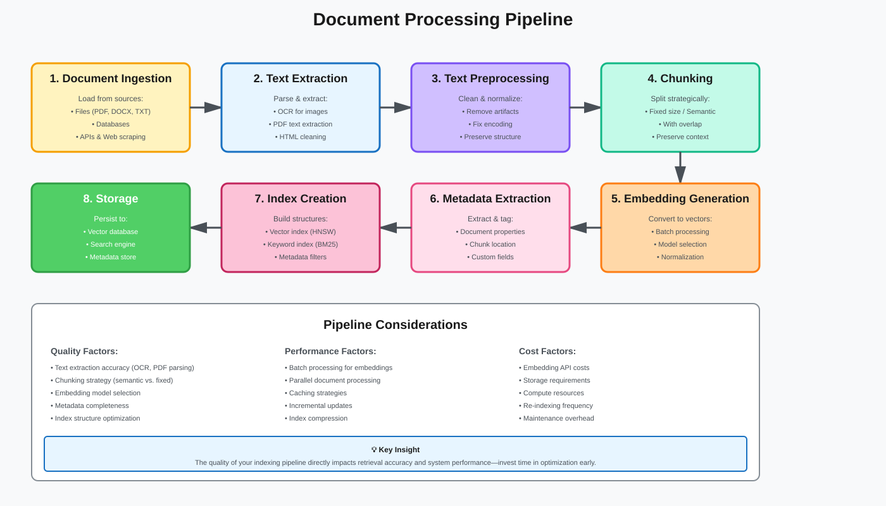
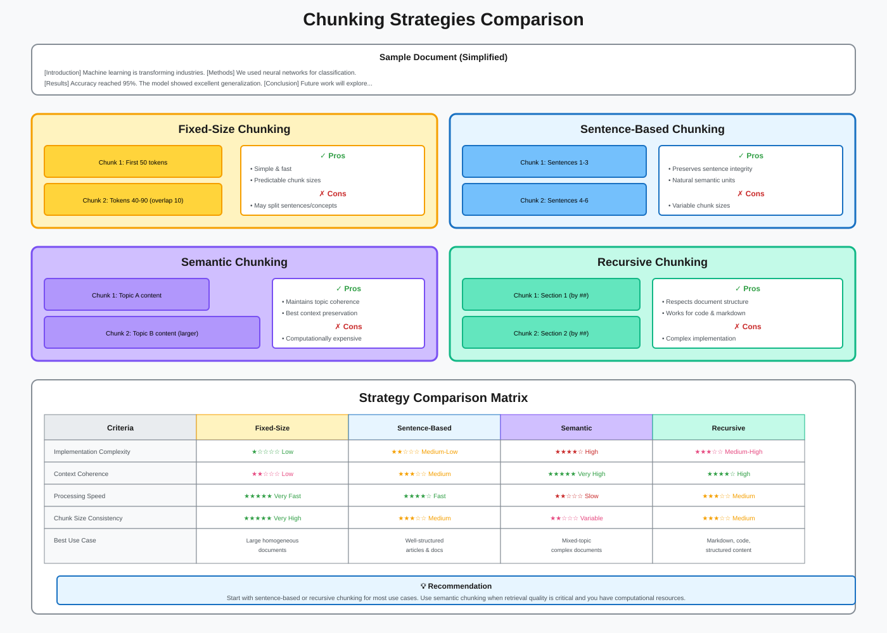
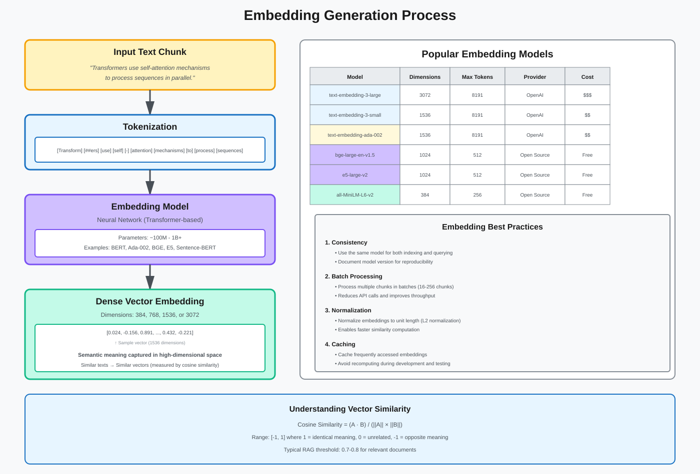
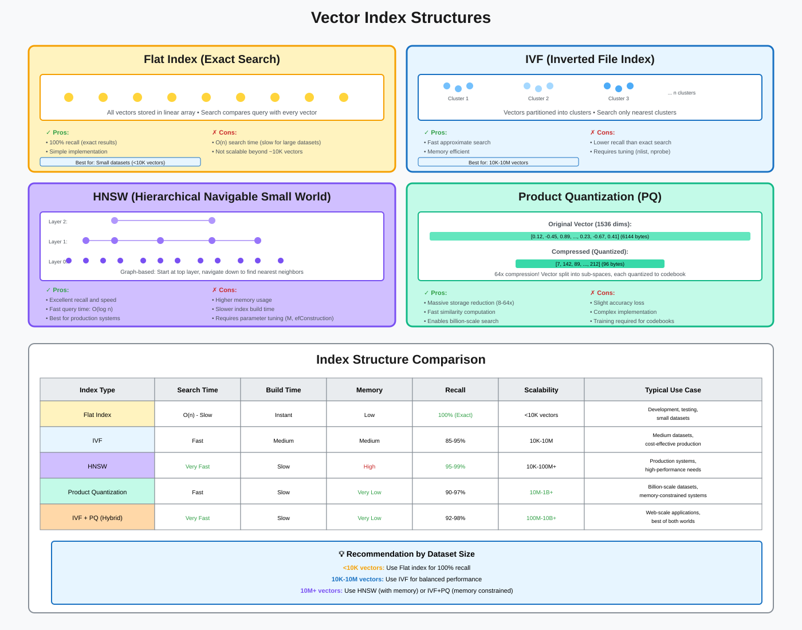
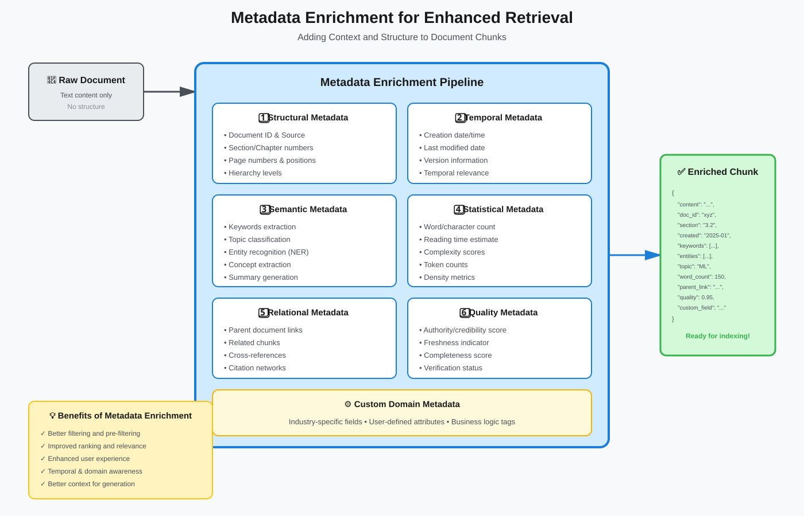
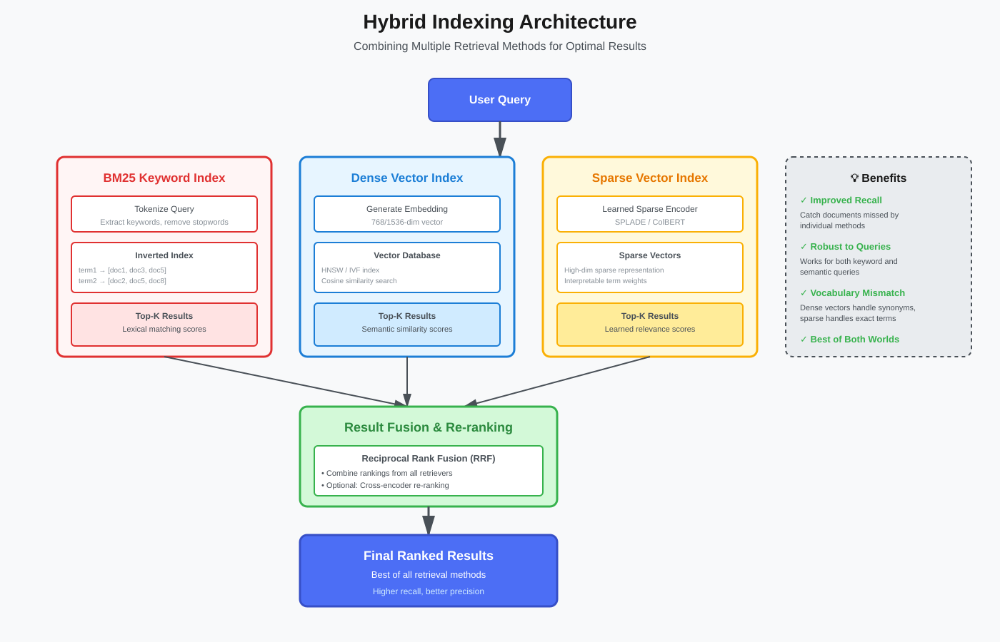
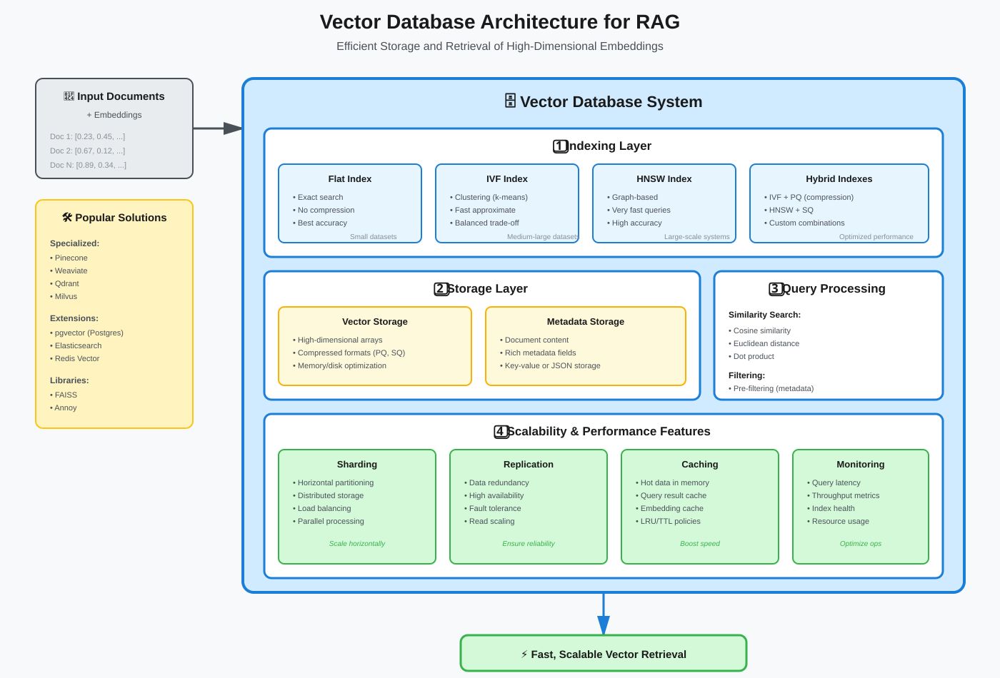
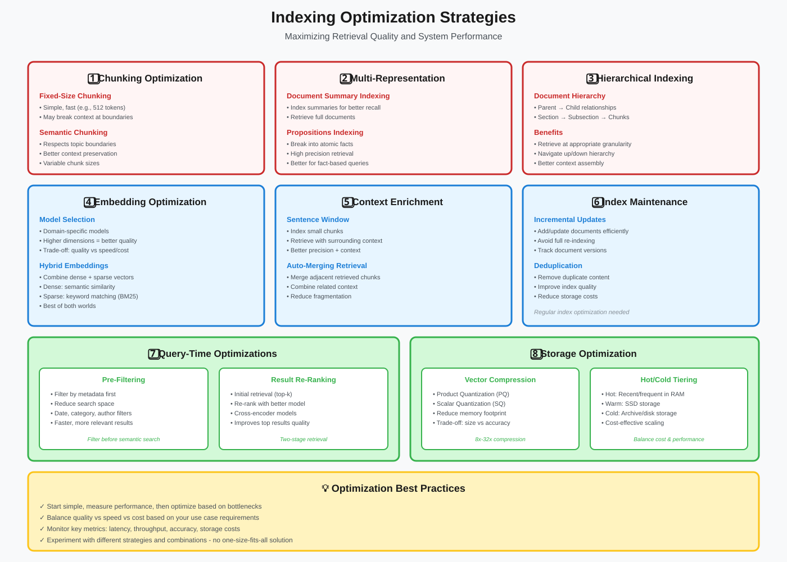

Indexing Techniques for RAG
Building Efficient and Scalable Document Indexes
📚 Quick Navigation
- Introduction
- Document Processing Pipeline
- Chunking Strategies
- Embedding Generation
- Index Structures
- Metadata Management
- Hybrid Indexing
- Implementation Best Practices
- Indexing Optimization
- Summary
Introduction
Indexing is the foundation of effective RAG systems. It transforms raw documents into searchable representations that enable fast and accurate retrieval. The quality of your indexing directly impacts retrieval performance, response latency, and overall system effectiveness.
Key objectives of indexing: - Transform documents into searchable formats - Create semantic representations via embeddings - Build efficient data structures for fast retrieval - Preserve document structure and metadata - Enable both semantic and keyword-based search
Document Processing Pipeline
The indexing pipeline consists of multiple stages that prepare documents for retrieval.

Pipeline Stages
1. Document Ingestion - Load documents from various sources (files, databases, APIs) - Extract text from different formats (PDF, DOCX, HTML, etc.) - Handle encoding and character set issues - Preserve document metadata
2. Text Preprocessing - Clean and normalize text - Remove artifacts (headers, footers, page numbers) - Handle special characters and formatting - Preserve important structure (tables, lists, code blocks)
3. Chunking - Split documents into manageable pieces - Maintain semantic coherence - Preserve context across chunks - Handle overlapping strategies
4. Embedding Generation - Generate vector representations - Batch processing for efficiency - Handle long documents - Store embeddings in vector database
5. Index Creation - Build searchable indexes - Create metadata filters - Establish relationships between chunks - Optimize for query patterns
Chunking Strategies
Effective chunking is critical for RAG performance. Poor chunking leads to incomplete context or irrelevant retrieval.

Fixed-Size Chunking
Description: Split documents into fixed-length chunks (e.g., 512 tokens)
Advantages: - Simple to implement - Predictable token usage - Consistent embedding sizes - Fast processing
Disadvantages: - May split mid-sentence or mid-concept - Ignores document structure - Can lose semantic coherence
Best for: - Unstructured text without clear boundaries - Large homogeneous documents - When simplicity is prioritized
Implementation:
def fixed_size_chunking(text, chunk_size=512, overlap=50):
chunks = []
words = text.split()
for i in range(0, len(words), chunk_size - overlap):
chunk = ' '.join(words[i:i + chunk_size])
chunks.append(chunk)
return chunks
Sentence-Based Chunking
Description: Split on sentence boundaries, grouping multiple sentences per chunk
Advantages: - Preserves sentence integrity - More natural semantic units - Better context coherence
Disadvantages: - Variable chunk sizes - May miss cross-sentence relationships - Requires sentence detection
Best for: - Well-structured prose - Articles and documents - When preserving readability matters
Semantic Chunking
Description: Split based on semantic similarity, grouping related content together
Advantages: - Maintains topical coherence - Adapts to content structure - Optimal context preservation
Disadvantages: - Computationally expensive - Requires embedding models - More complex implementation
Best for: - Mixed-topic documents - Technical documentation - When retrieval quality is critical
Recursive Chunking
Description: Hierarchically split documents, trying larger delimiters first
Advantages: - Respects document structure - Handles various content types - Maintains logical boundaries
Disadvantages: - Complex logic - May create uneven chunks - Requires careful tuning
Best for: - Structured documents (markdown, code) - Multi-format content - When structure preservation is important
Embedding Generation
Embeddings convert text into dense vector representations that capture semantic meaning.

Embedding Model Selection
Key considerations: - Dimensionality: Higher dims capture more info but increase storage/compute - Domain specificity: General vs. specialized models - Performance: Balance between quality and speed - Context window: Maximum input length
Popular embedding models:
| Model | Dimensions | Context Length | Use Case |
|---|---|---|---|
text-embedding-3-small |
1536 | 8191 tokens | General purpose, cost-effective |
text-embedding-3-large |
3072 | 8191 tokens | Highest quality, more expensive |
text-embedding-ada-002 |
1536 | 8191 tokens | Legacy, still widely used |
all-MiniLM-L6-v2 |
384 | 512 tokens | Fast, lightweight, open-source |
bge-large-en-v1.5 |
1024 | 512 tokens | High quality, open-source |
Embedding Best Practices
1. Consistent model usage - Use the same model for indexing and querying - Document model version for reproducibility - Plan for model updates and re-indexing
2. Batch processing - Process multiple chunks in batches - Optimize API calls and costs - Handle rate limits gracefully
3. Normalization - Normalize embeddings to unit length - Improves similarity calculations - Enables cosine similarity via dot product
4. Caching - Cache embeddings for frequently accessed content - Reduce redundant computations - Speed up development and testing
Index Structures
Different index structures optimize for different query patterns and performance requirements.

Flat Index (Exact Search)
Description: Store all vectors and compute similarity with every vector during search
Characteristics: - 100% recall (finds all matches) - Linear search time O(n) - Simple implementation - No index building time
Best for: - Small datasets (<10,000 vectors) - When exact results are required - Development and testing
IVF (Inverted File Index)
Description: Partition vector space into Voronoi cells, search only nearest cells
Characteristics: - Fast approximate search - Configurable accuracy/speed tradeoff - Memory efficient - Requires clustering during index build
Parameters:
- nlist: Number of clusters (typically √n to 4√n)
- nprobe: Number of clusters to search (higher = more accurate but slower)
Best for: - Medium to large datasets (10K-10M vectors) - When approximate results are acceptable - Production systems needing speed
HNSW (Hierarchical Navigable Small World)
Description: Graph-based index with hierarchical layers for efficient navigation
Characteristics: - Excellent recall and speed - Higher memory usage - Fast query time - Slower index build time
Parameters:
- M: Number of connections per layer (typical: 16-64)
- efConstruction: Build-time search depth (typical: 200-500)
- efSearch: Query-time search depth (typical: 100-500)
Best for: - High-performance applications - When memory is available - Read-heavy workloads
Product Quantization (PQ)
Description: Compress vectors by quantizing sub-spaces independently
Characteristics: - Dramatically reduced memory usage (8-64x compression) - Slight accuracy loss - Fast search with reduced precision - Complex implementation
Best for: - Very large datasets (10M+ vectors) - Memory-constrained environments - When storage costs dominate
Metadata Management
Metadata enables filtering, routing, and enhanced retrieval capabilities.

Essential Metadata Fields
Document-level metadata:
- document_id: Unique identifier
- source: Origin (file path, URL, database)
- created_at: Creation timestamp
- modified_at: Last modification time
- author: Document creator
- document_type: Format or category
- language: Content language
Chunk-level metadata:
- chunk_id: Unique chunk identifier
- document_id: Parent document reference
- chunk_index: Position in document
- chunk_size: Length in tokens/characters
- section_title: Heading or section name
- page_number: Location in original document
- embedding_model: Model used for embedding
Domain-specific metadata: - Custom fields relevant to your domain - Tags and categories - Relationships to other documents - Access control information
Metadata Filtering
Pre-filtering (before vector search):
# Filter to specific document types before semantic search
results = vector_db.search(
query_embedding,
filter={"document_type": "technical_manual", "language": "en"}
)
Post-filtering (after vector search):
# Retrieve more candidates, then filter
candidates = vector_db.search(query_embedding, top_k=100)
filtered = [c for c in candidates if c.metadata["recency"] == "last_30_days"]
final_results = filtered[:10]
Hybrid filtering: - Combine metadata filters with semantic search - Use metadata to boost relevance scores - Enable complex boolean queries
Hybrid Indexing
Combine multiple retrieval methods for optimal results.

BM25 + Dense Vectors
Approach: Maintain both keyword-based (BM25) and semantic (vector) indexes
Benefits: - Captures both lexical and semantic similarity - Better recall across different query types - Resilient to vocabulary mismatch
Implementation:
# Dual index retrieval
keyword_results = bm25_index.search(query_text, top_k=50)
semantic_results = vector_index.search(query_embedding, top_k=50)
# Combine using Reciprocal Rank Fusion
combined = reciprocal_rank_fusion([keyword_results, semantic_results])
Multi-Vector Indexing
Approach: Generate multiple embeddings per document using different models or prompts
Use cases: - Multi-perspective document representation - Query-specific embeddings - Multi-lingual support

Example:
# Index with multiple embeddings
doc_embeddings = {
"summary": embed(doc.summary),
"full_text": embed(doc.text),
"key_phrases": embed(doc.extract_keyphrases())
}
Sparse + Dense Hybrid
Approach: Combine sparse vectors (learned keyword weights) with dense embeddings
Models: - SPLADE (Sparse Lexical and Dense) - ColBERT (Contextualized Late Interaction)
Benefits: - Interpretability of sparse components - Semantic power of dense embeddings - Efficient retrieval with both
Implementation Best Practices
Incremental Indexing
Challenge: Add new documents without rebuilding entire index
Strategies: - Use vector databases with insert capabilities - Batch inserts for efficiency - Maintain index versions - Schedule periodic index optimization
Example workflow:
# Daily incremental update
new_docs = fetch_new_documents(since=last_index_time)
chunks = chunk_documents(new_docs)
embeddings = generate_embeddings(chunks)
vector_db.insert(embeddings, metadata)
Index Versioning
Why version indexes: - Track model changes - Enable A/B testing - Rollback capability - Reproducibility
Versioning strategy:
indexes/
v1_ada002_chunk512/
v2_bge_large_chunk256/
v3_e5_large_semantic_chunk/
Monitoring and Maintenance
Key metrics to track: - Index size and growth rate - Query latency (p50, p95, p99) - Recall and precision - Embedding generation time - Index update frequency
Maintenance tasks: - Periodic re-indexing with updated models - Remove outdated documents - Optimize index structure - Update metadata schemas
Cost Optimization
Strategies: - Cache embeddings to reduce API calls - Use smaller models where appropriate - Compress vectors with quantization - Batch processing to minimize requests - Monitor and optimize storage costs
Indexing Optimization
Advanced techniques to maximize retrieval quality and system performance.

1. Chunking Optimization
Choosing the right chunking strategy significantly impacts retrieval quality and context preservation.
Fixed-Size Chunking - Simple and fast implementation - Typically 512 tokens per chunk - May break context at boundaries - Best for homogeneous, unstructured text
Semantic Chunking - Respects topic boundaries - Preserves conceptual coherence - Variable chunk sizes adapt to content - Better context preservation but computationally expensive
Implementation considerations:
# Semantic chunking example
def semantic_chunking(text, model, similarity_threshold=0.7):
sentences = split_sentences(text)
embeddings = model.encode(sentences)
chunks = []
current_chunk = [sentences[0]]
for i in range(1, len(sentences)):
similarity = cosine_similarity(embeddings[i-1], embeddings[i])
if similarity >= similarity_threshold:
current_chunk.append(sentences[i])
else:
chunks.append(' '.join(current_chunk))
current_chunk = [sentences[i]]
chunks.append(' '.join(current_chunk))
return chunks
2. Multi-Representation Indexing
Create multiple representations of documents to improve retrieval precision and recall.
Document Summary Indexing - Generate concise summaries of documents - Index summaries for better conceptual matching - Retrieve full documents when summaries match - Reduces noise in retrieval while maintaining context
Propositions Indexing - Break documents into atomic facts or propositions - Each proposition is a self-contained statement - High precision retrieval for fact-based queries - Better for question-answering tasks
Implementation approach:
# Multi-representation indexing
def index_with_summaries(documents):
for doc in documents:
# Generate and index summary
summary = llm.generate(f"Summarize: {doc.text}")
summary_embedding = embed(summary)
# Store mapping: summary_id -> full_document_id
vector_db.insert(
embedding=summary_embedding,
metadata={
"type": "summary",
"full_doc_id": doc.id,
"summary_text": summary
}
)
# Also index full document
doc_embedding = embed(doc.text)
vector_db.insert(
embedding=doc_embedding,
metadata={"type": "full_document", "doc_id": doc.id}
)
3. Hierarchical Indexing
Organize documents in hierarchical structures to enable multi-level retrieval.
Document Hierarchy Structure: - Document → Sections → Subsections → Chunks - Parent-child relationships preserved - Navigate up for broader context - Navigate down for specific details
Benefits: - Retrieve at appropriate granularity - Expand context by including parent/child nodes - Better handling of long documents - Improved context assembly for LLM input
Implementation:
# Hierarchical indexing structure
class DocumentHierarchy:
def __init__(self, document):
self.document = document
self.sections = self.parse_sections(document)
def index_hierarchically(self):
# Index document-level summary
doc_summary = create_summary(self.document)
index_chunk(doc_summary, level="document", parent_id=None)
# Index sections
for section in self.sections:
section_summary = create_summary(section)
section_id = index_chunk(
section_summary,
level="section",
parent_id=self.document.id
)
# Index subsections and chunks
for chunk in section.chunks:
index_chunk(
chunk,
level="chunk",
parent_id=section_id
)
4. Embedding Optimization
Select and optimize embedding models for your specific use case.
Model Selection Criteria: - Domain specificity (general vs. specialized) - Dimensionality (higher = more capacity, more cost) - Context window (matches your chunk sizes) - Inference speed and cost
Hybrid Embeddings Strategy: - Combine dense vectors (semantic) with sparse vectors (keywords) - Dense vectors: capture conceptual similarity - Sparse vectors: exact keyword matching (BM25-style) - Best of both worlds for robust retrieval
Example configuration:
# Hybrid embedding approach
class HybridEmbedder:
def __init__(self):
self.dense_model = SentenceTransformer('bge-large-en-v1.5')
self.sparse_model = SPLADE('naver/splade-cocondenser-ensembledistil')
def embed(self, text):
dense = self.dense_model.encode(text)
sparse = self.sparse_model.encode(text)
return {
'dense': dense,
'sparse': sparse,
'text': text
}
5. Context Enrichment
Enhance retrieved chunks with surrounding context for better LLM understanding.
Sentence Window Retrieval - Index small, precise chunks (e.g., single sentences) - During retrieval, expand to include surrounding sentences - Balance between precision and context - Retrieve what matches, return what's needed
Auto-Merging Retrieval - Retrieve multiple small chunks - Automatically merge adjacent or overlapping chunks - Reduces fragmentation - Provides coherent context to LLM
Implementation:
# Sentence window retrieval
def retrieve_with_window(query, window_size=3):
# Retrieve precise matches
matches = vector_db.search(query, top_k=5)
expanded_results = []
for match in matches:
chunk_id = match.metadata['chunk_id']
# Get surrounding chunks
context = get_surrounding_chunks(
chunk_id,
before=window_size,
after=window_size
)
expanded_results.append({
'matched_chunk': match,
'full_context': context
})
return expanded_results
6. Index Maintenance
Maintain index quality and efficiency over time.
Incremental Updates: - Add new documents without full re-indexing - Update changed documents efficiently - Track document versions and timestamps - Schedule periodic full re-indexing
Deduplication: - Identify and remove duplicate content - Use embedding similarity or hashing - Improves index quality - Reduces storage costs
Optimization tasks:
# Regular maintenance workflow
def maintain_index():
# Remove outdated documents
remove_docs_older_than(days=365)
# Deduplicate similar chunks
deduplicate_similar_chunks(threshold=0.95)
# Optimize index structure
vector_db.optimize_index()
# Update statistics
update_index_metrics()
7. Query-Time Optimizations
Improve retrieval performance during query execution.
Pre-Filtering Strategy: - Apply metadata filters before vector search - Reduces search space significantly - Faster query execution - More relevant results
Result Re-Ranking: - Initial retrieval with fast method (top-k candidates) - Re-rank candidates with more powerful model - Cross-encoder models for accurate relevance scoring - Two-stage retrieval for speed and quality
Implementation:
# Two-stage retrieval with re-ranking
def retrieve_and_rerank(query, filters=None):
# Stage 1: Fast retrieval with filters
candidates = vector_db.search(
query_embedding=embed(query),
top_k=100,
filter=filters # Apply filters first
)
# Stage 2: Re-rank with cross-encoder
cross_encoder = CrossEncoder('cross-encoder/ms-marco-MiniLM-L-12-v2')
pairs = [(query, candidate.text) for candidate in candidates]
scores = cross_encoder.predict(pairs)
# Sort by re-ranked scores
reranked = sorted(
zip(candidates, scores),
key=lambda x: x[1],
reverse=True
)
return [item[0] for item in reranked[:10]]
8. Storage Optimization
Reduce storage costs while maintaining performance.
Vector Compression: - Product Quantization (PQ): 8x-32x compression - Scalar Quantization (SQ): 4x-8x compression - Trade-off: slight accuracy loss for major space savings - Essential for large-scale deployments
Hot/Cold Tiering: - Hot tier: Recent/frequently accessed docs in RAM - Warm tier: SSD storage for regular access - Cold tier: Archive/disk storage for infrequent access - Cost-effective scaling strategy
Implementation considerations:
# Vector compression with PQ
import faiss
# Create compressed index
index = faiss.IndexIVFPQ(
base_index,
dimension=768,
nlist=1000, # Number of clusters
M=64, # Number of sub-vectors
nbits=8 # Bits per sub-vector
)
# This achieves ~8x compression
# 768 dims * 4 bytes = 3072 bytes original
# 64 sub-vectors * 1 byte = 64 bytes compressed
Best Practices for Optimization
Start Simple, Measure, Iterate: 1. Begin with basic fixed-size chunking and single index 2. Establish baseline performance metrics 3. Identify bottlenecks through monitoring 4. Apply optimizations targeting specific issues 5. Measure impact and iterate
Balance Trade-offs: - Quality vs. Speed: Semantic chunking vs. fixed-size - Precision vs. Recall: Small chunks vs. large chunks - Cost vs. Performance: Model size, compression, storage tiers - Complexity vs. Maintainability: Simple vs. advanced strategies
Monitor Key Metrics: - Retrieval latency (p50, p95, p99) - Retrieval accuracy (recall@k, precision@k) - Index size and growth rate - Query throughput - Storage and compute costs
Continuous Improvement: - A/B test different strategies - Analyze failed retrievals - Update indexes with new models - Refine based on user feedback - Stay current with new techniques
Summary
Effective indexing is foundational to RAG system performance:
- Choose chunking strategies that preserve semantic coherence
- Select embedding models appropriate for your domain and scale
- Use index structures that balance speed, accuracy, and resources
- Leverage metadata for enhanced filtering and routing
- Implement hybrid approaches for best recall
- Apply optimization techniques based on your bottlenecks
- Monitor and optimize continuously
Key takeaways: - No one-size-fits-all solution—optimize for your use case - Start simple, iterate based on evaluation metrics - Balance between quality, speed, and cost - Plan for scalability from the beginning - Hybrid approaches often outperform single methods - Regular maintenance is essential for production systems